HGTector ver 0.1.9 Quick Start Guide
Qiyun Zhu, Katharina Dittmar
Index
System Requirements
Operating system: HGTector is cross-platform. It supports Windows, Mac OS X and Linux (and perhaps other Unix-like operating systems).
Perl: HGTector is written in Perl. It requires that you have a Perl interpreter installed in your system. The Perl interpreter is a standard component in most Mac OS X and Linux distributions. If you are a Windows user and you haven't installed it, you may download and install Strawberry Perl or ActivePerl.
R: Optionally, HGTector calls R to perform some advanced statistics and graphics. If you want to use these functions, you may install R, as well as Perl package Statistics::R. Please refer to the manual for instructions.
Working directory
Choose a folder to hold all input, intermediate and output files. This folder is your working directory.
Prior to running HGTector, the working directory should contain a subfolder "input" to hold all input files, and a configuration file "config.txt" to specify the parameters for HGTector scripts.
Note: all folder names and file names, such "input", are case sensitive. Same below.
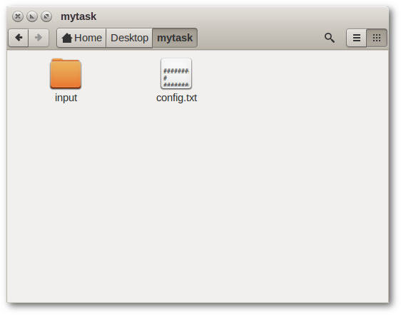
Configuring HGTector
The configuration file "config.txt" is a plain text file that may be manipulated using any text editor. A template detailing all available parameters, their usages and their default values can be found in the program folder.
A parameter definition is written as "parameter=value". Leading and trailing spaces are acceptable. Contents following a "#" symbol are comments and will not be intepreted by the program. You just need to specify parameters with non-default values in your own configuration file.
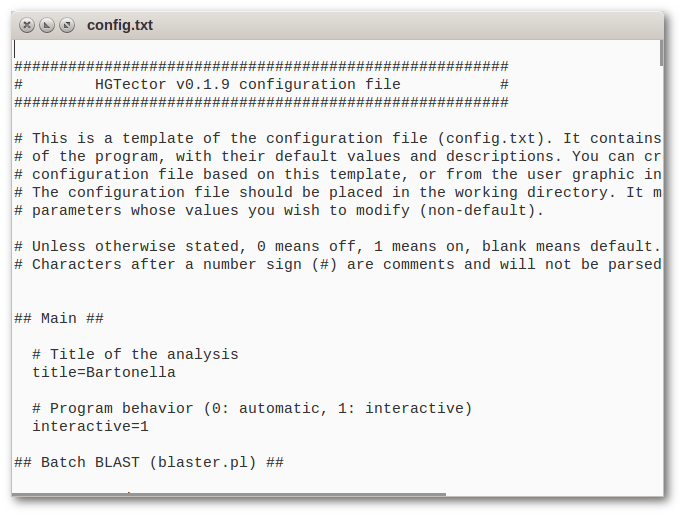
The configuration file can be generated using the GUI, which provides options and explanations for most parameters.
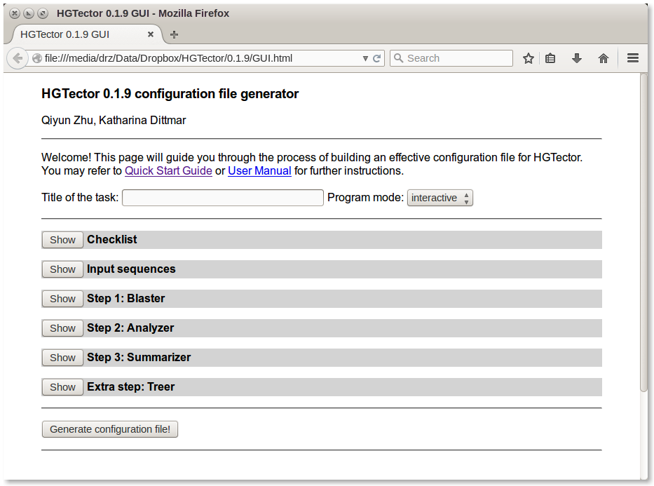
Input files
One or more input files may be placed in subfolder "input". One file is considered as one "set" of proteins (protein-coding genes). A protein set may contain the entire, or partial proteome of one organism of interest. Multiple input files may correspond to multiple related organisms.
These files should have simple and clear names. In the illustrated case, "Bh.txt" contains all protein entries of Bartonella henselae str. Houston-1. This protein set will be referred to as "Bh" in the program. The extension name ".txt" will be automatically trimmed.
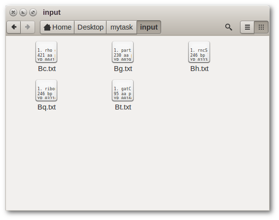
Two types of input protein sets are acceptable:
1. NCBI protein entries
This only applies to proteins that are already recorded in the NCBI database (also in the BLAST database). The proteins will be referred to by their NCBI accession numbers (e.g., YP_033345). Version numbers will be omitted. A simple list of accession numbers makes a valid input file:
HGTector supports multiple native NCBI formats to facilitate easy retrieval of input files, such as a list of summaries or a whole-genome annotation file in GenBank format (*.gb or *.gbk). Here are examples of quickly retrieving these files:
In the NCBI web interface, locate proteins of interest and download Summary or FASTA.
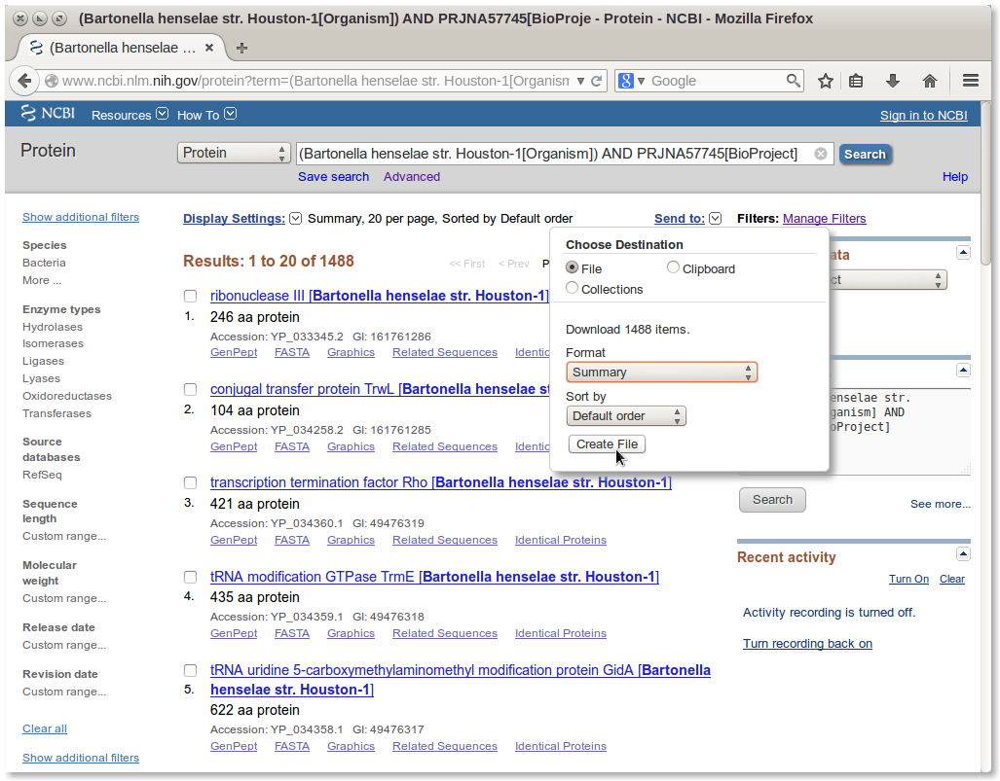
Or, visit the NCBI FTP site, find a genome of interest, and download the corresponding *.gbk files (GenBank format).
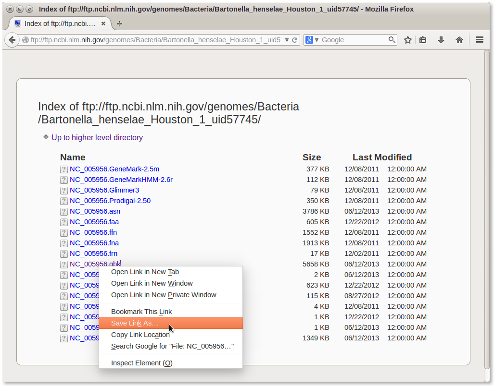
2. User-defined protein sequences
You may feed HGTector with protein sequences that do not correspond to NCBI records (e.g., your unpublished transcriptomic data). Simply create a FASTA file containing these sequences.
Note: The sequence titles should be reasonable, meaning: not containing the NCBI-style delimiter "|" or any other weird characters.
Note: One or more input files, regardless of format, can be merged or split.
Running HGTector
Despite having a GUI to generate config.txt, the HGTector program itself is written in Perl and only runs in a terminal (aka. a command-line window). To launch a terminal, you should:
Windows users: press Win+R, type "cmd", and click "OK".
Mac OS X users: navigate to "Applications/Utilities", find "Terminal", and double-click on it.
Unix/Linux users: you know what to do.
Navigate to HGTector's program directory using command cd. For example, if the program folder "HGTector" is placed on your desktop, then you may sequentially enter these commands:
cd Desktop
cd HGTectorRun HGTector by typing:
perl HGTector.pl path/to/working/directoryIf you are not familiar with paths and directories, you may place the working directory (say, "mytask") in the HGTector folder, and simply type:
perl HGTector.pl mytaskThe program will now start to run through the whole process. There will be screen prompts to indicate any ongoing steps. You may keep pressing Enter (interactive mode) or simply wait (automatic mode) until you see the final result.
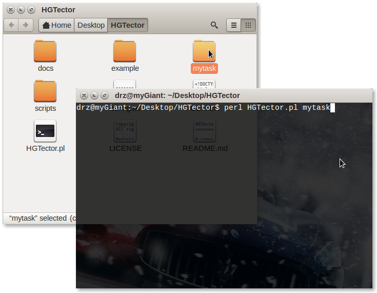
Running individual scripts
The program is composed of multiple Perl scripts (in program subfolder "scripts", core scripts are in bold font, optional scripts are in regular font):
Alternative to running the master script (HGTector.pl) directly, you may execute individual scripts (e.g., Blaster) by typing:
perl scripts/blaster.pl path/to/working/directoryThis allows a more flexible and controllable way of conducting the analysis.
Batch BLAST
This step performs all-vs-all BLASTP of all input proteins against an external database. It is the data collection stage of the analysis, a significantly time-consuming step.
To save time, the recommended usage of HGTector is to spend some time in running Blaster with relatively relaxed parameters, keep all retrieve BLAST results, then analyze the data for multiple times with different combinations of stringent parameters.
You may either perform BLAST via http connection to the NCBI BLAST server (by default), or use standalone BLAST program on local BLAST databases, in which case, you need to download and install them. Please refer to this page for instructions.
The most important parameter at this step is the "number of hits to return" (nHit). It should allow sufficient sampling of BLAST hits for the genes. For single cellular eukaryotes, 100 hits may be enough; for most bacteria and archaea, 250-500 hits are recommended; for bacteria whose sister groups have been extensively sequenced (e.g., 500 E. coli genomes...), you may need more hits.
When the task starts, the status of individual BLAST searches will be displayed on screen. If multiple Blaster instances are running simultaneously, the ongoing Blaster instances and the number of completed BLASTs will be updated every ten minutes.
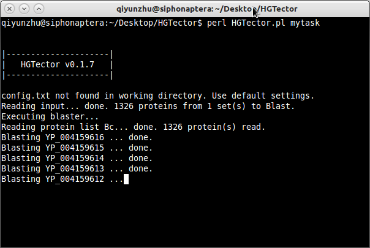
A "blast" folder will be created in the working directory. The folder will contain subfolders representing individual protein sets, and log files recording the status of individual BLAST searches. The BLAST results of individual proteins will be stored in the subfolders.
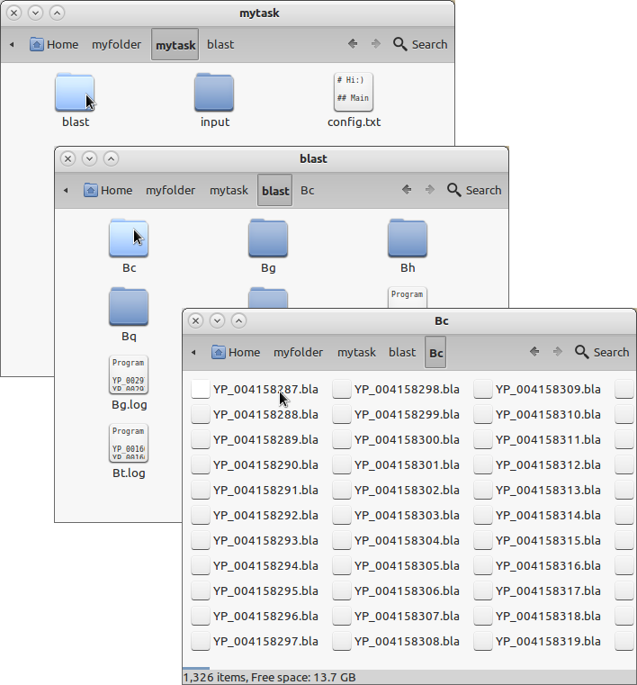
The BLAST results are saved in a NEXUS-like format (*.bla). It contains a basic information section, and a BLAST hit table section.
If you have switched on the "TaxBLAST" option (taxBlast=1), there will be an additional section, displaying the taxonomic tree of hits in an easy-to-read manner:
If you have switched on the "Retrieve sequences" (seqBlast=1) or "Retrieve multiple sequence alignments" (alnBlast=1) option, an additional section will store the sequences of hits in NEXUS format. Therefore, the whole file can be directly opened by sequence-editing programs, such as SeaView.
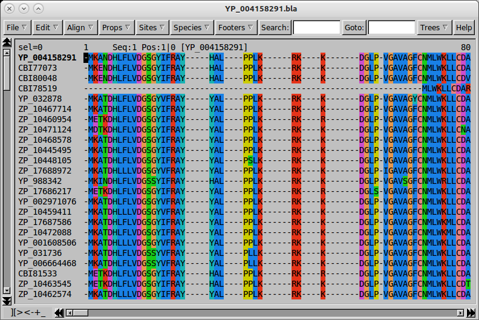
Be prepared that the BLAST results may consume a considerable amount of disk space (typically hundreds of MB to several GB).
The batch BLASTP process may take hours to days, depending on the size of input protein sets. It can be halted at any time (accidentally or intentionally). A halted task can be resumed at any time by re-executing this step.
Step 2: Taxonomer
This step retrieves taxonomic information of all BLAST matches from the NCBI server. The information includes names and TaxIDs of designated taxonomic ranks. The process typically lasts for several to dozens of minutes.
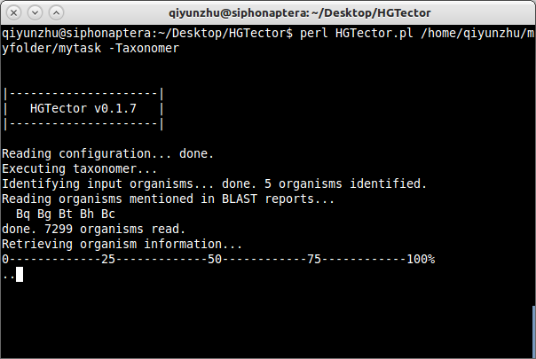
The result will be saved as three files: "taxa.db", "ranks.db" and "self.info" in a folder named "taxonomy" in the working directory.
Step 3: Purifier
This step is optional. It performs post-BLAST modifications to the BLAST reports. It includes a complete phylogenetics pipeline, which allows you to automatically build trees based on BLAST hits for each protein.
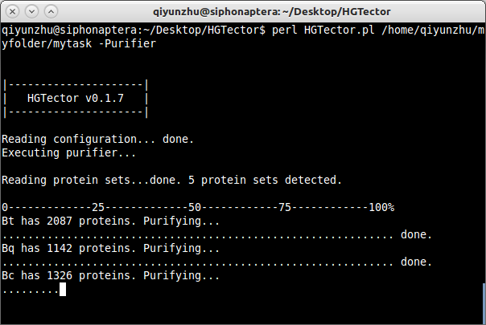
The resulting trees will be attached to each BLAST report in NEXUS format, too. Tip labels will be automatically translated into organism names. Therefore, the whole file can be directly viewed by tree-viewing programs, such as FigTree.
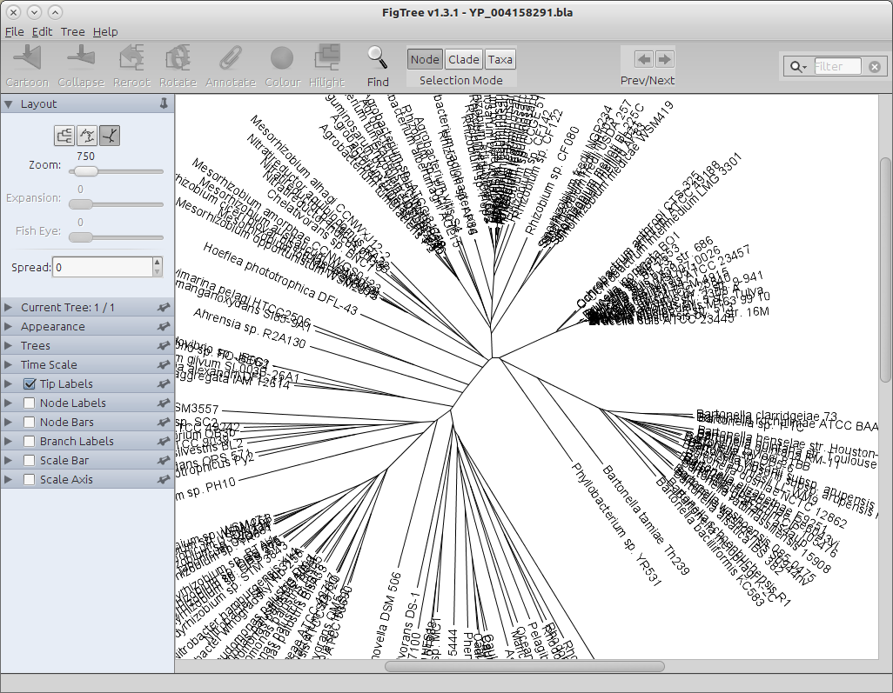
The amount of time this step takes varies, from 0 (if you skip this step) to weeks (if you want to build 10,000 deliberate maximum likelihood trees).
The sequence alignments and trees will not be used for subsequent analyses. They are just for you to verify prediction results, either by eyeballing the trees or by conducting further analyses of your preference.
Step 4: Analyzer
This is the most important step of HGTector. It does all statistical tricks to find out which genes may be HGT-derived. All the intermediate and final results will be saved in folder "result".
You may run this step for several times with different parameters until you get a satisfying result. (You don't have to re-run the previous three steps.)
First, you need to specify a grouping scenario, which defines the self, close and distal groups of organisms.
In brief, the self group contains all input genomes, and their immediate sister organisms. The close group contains sister groups of the self group, representing its vertical inheritance history. The distal group contains all other organisms, which are phylogenetically distant from the self group.
For example, if you are studying several human genomes, you may consider defining the self group as all humans (genus Homo, TaxID = 9605), the close group as all great apes (family Hominidae, TaxID = 9604) (except for humans), and the distal group as everything else.
Only gene flows from the distal group organisms to input genomes will be considered as putative HGT events.
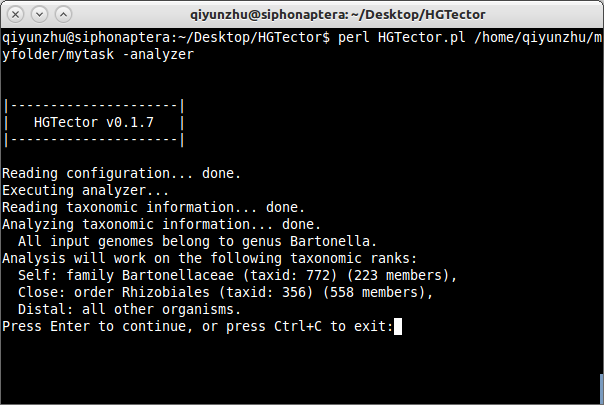
With a grouping scenario, the program will calculate the weight of BLAST hits of each group for each gene. For the whole genome(s), you will get three weight populations. They are defined as a "fingerprint" of the genome(s).
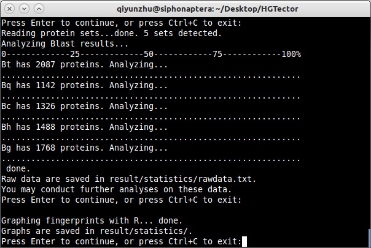
The raw data (including three weights per gene) are saved as "rawdata.txt" in "result/statistics/". If you are familiar with statistics, you are encouraged to play with the data by yourself.
If you have R installed, you may choose to graph the fingerprint (graphFp=1) as boxplot, histogram, density plot, and/or scatter plot. Here is an example:
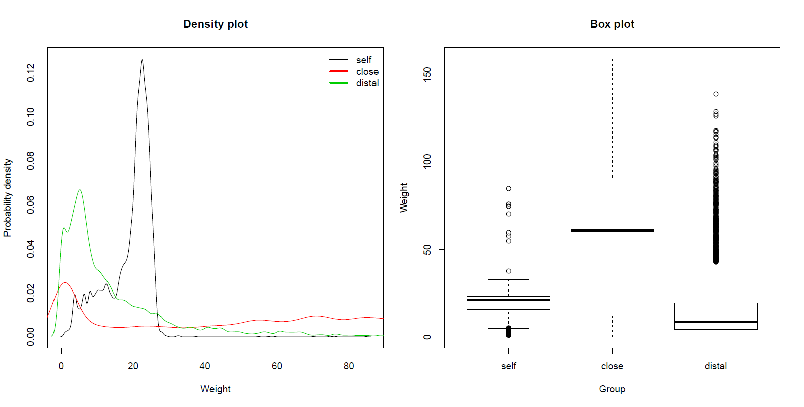
Based on the fingerprint, the program will conduct cluster analyses to isolate a subset of genes that are significantly more likely to be horizontally acquired, comparing to the rest of the genome(s).
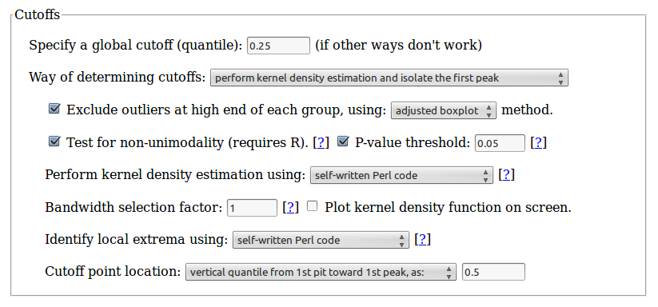
The results will be saved as tab-delimited text files in "result/detail/". Genes predicted to be HGT-derived will have a "1" in the "HGT" column.
As an alternative to this proposed new method, you may also conduct the conventional "bidirectional best match" method to predict HGT events, by switch on option BBH=1.
The whole step typically spends several minutes only.
Step 5: Summarizer
Now that you have the prediction results, it is time to summarize them in a human-readable manner. This step does the job. It generates reports in your choice of plain text, web page (HTML) and/or Excel spreadsheet formats.
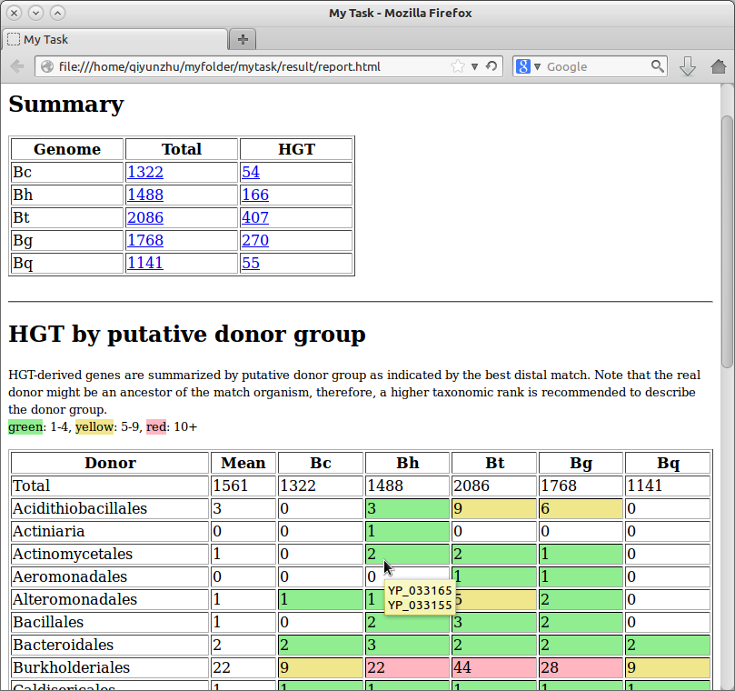
You have options to have the program summarize HGT-derived genes in three contexts: by putative donor group, by functional annotation, or by gene orthology.
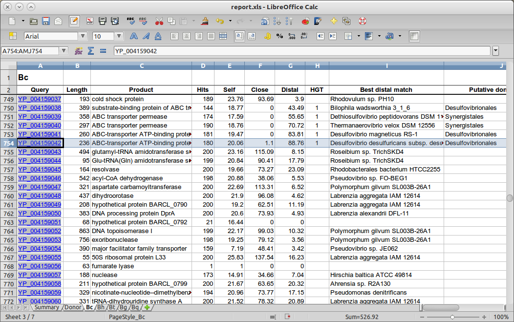
Please email us (qiyunzhu@gmail.com, katharinad@gmail.com) if you have any questions.
Last update: Jun. 1, 2015